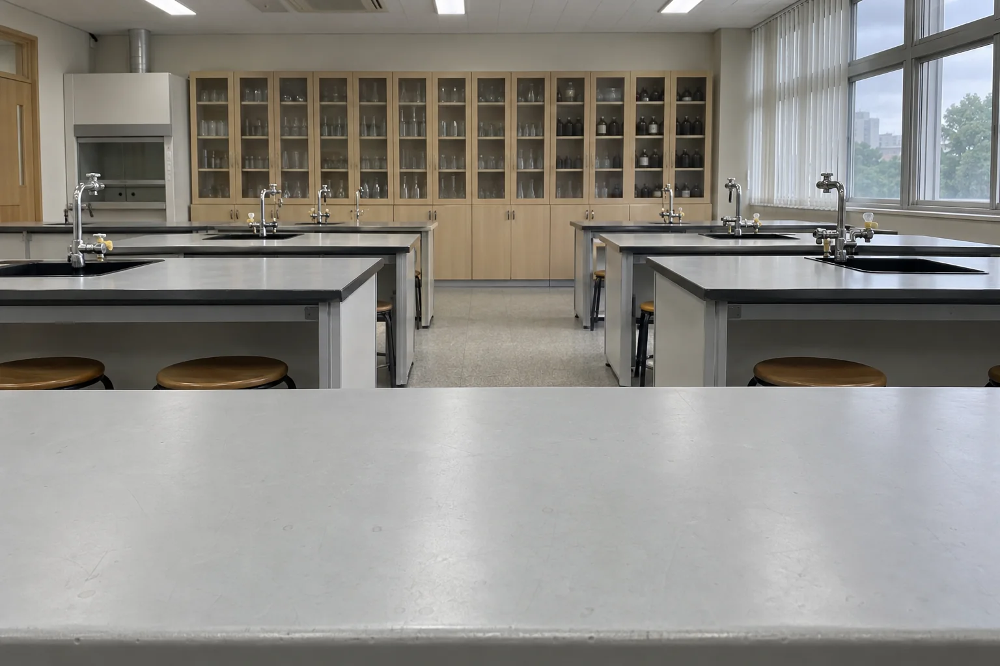
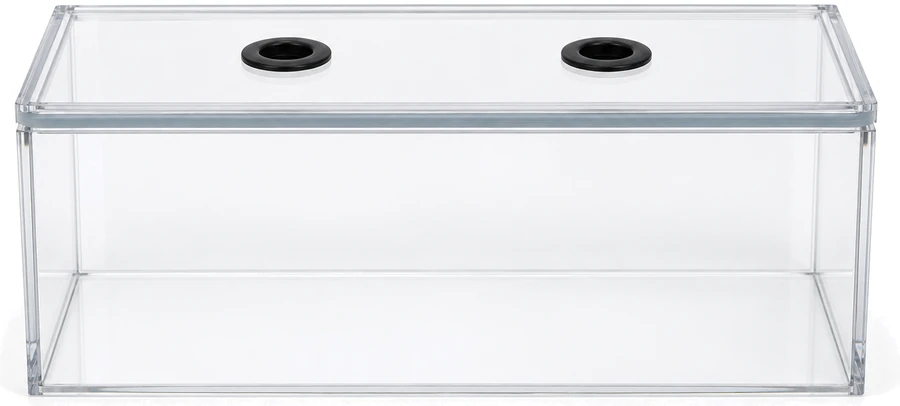

그림과 같은 위치에 실험 장치를 설치하세요.


0분/ 10분
장치를 4개 모두 설치하세요. (0/4)


측정 결과 그래프
1분마다 측정한 값을 점으로 나타냅니다. 산소는 공기 중에 약 20.9% 있어 변화 폭이 작으므로 세로축 한 칸을 0.02%로 확대했습니다. 실제 10분 측정을 화면에서는 약 30초로 줄여 보여 줍니다.
탐구 결과 기록
측정을 마치면 기록할 수 있습니다.1측정 결과, 시간이 지나면서 두 기체의 농도는 어떻게 변했나요?
2실험 결과를 바탕으로 알맞은 물질을 고르세요.